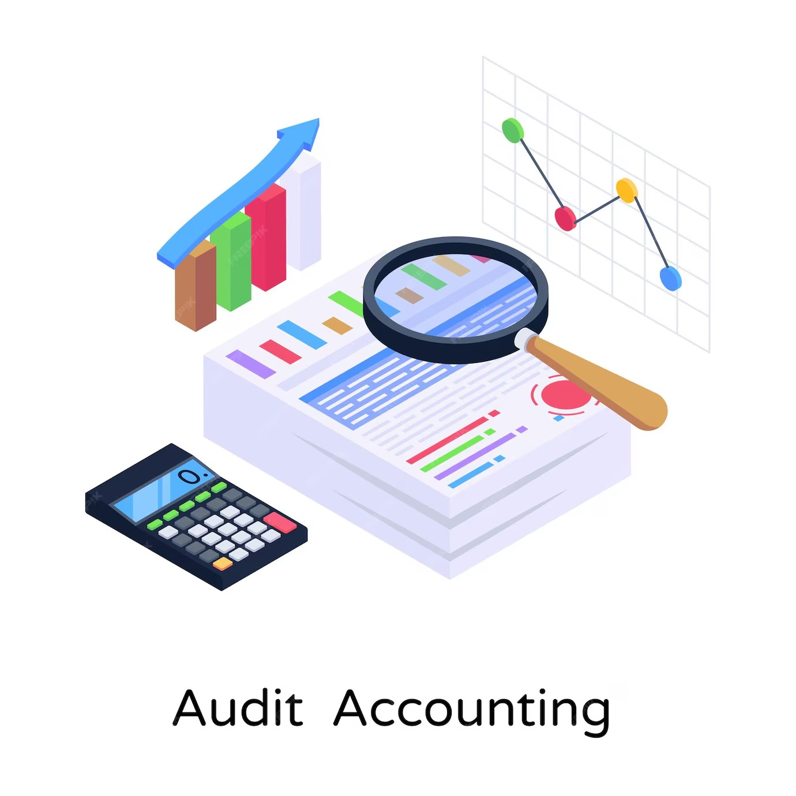

¿Qué son las auditorías y revisiones administrativas?
Las auditorías y revisiones administrativas de los recursos tecnológicos son procesos fundamentales que permiten asegurar que los sistemas, hardware y software de una organización sean utilizados de manera eficiente, segura y conforme a las normativas internas y externas. Estos procesos permiten detectar posibles fallos, vulnerabilidades o ineficiencias que puedan afectar el desempeño de la infraestructura tecnológica.
Más Información sobre Auditorías y Revisiones
Las auditorías y revisiones son procesos fundamentales para asegurar la correcta administración, legalidad y transparencia en la gestión de los recursos tecnológicos.
Estas prácticas permiten detectar irregularidades, optimizar procesos y fortalecer la rendición de cuentas.
1. Objetivos de la Auditoría Tecnológica
Las auditorías aplicadas a los recursos tecnológicos tienen como finalidad:
Verificar el cumplimiento de las políticas contables y administrativas.
Evaluar la eficiencia en la adquisición, uso y mantenimiento de los equipos.
Corroborar la existencia física y estado de los bienes registrados contablemente.
Detectar riesgos relacionados con obsolescencia, seguridad de la información o uso indebido.
Analizar la relación costo-beneficio de las inversiones tecnológicas.
2. Tipos de Auditorías Aplicables
Auditoría Financiera: Revisa si los registros contables relacionados con activos tecnológicos reflejan la realidad financiera, conforme a las normas contables.
Auditoría Operativa: Evalúa la eficiencia y eficacia del uso de los recursos tecnológicos en la institución.
Auditoría Informática o de Sistemas: Examina la seguridad, gestión de software, infraestructura tecnológica y su alineación con los objetivos educativos.
Auditoría de Cumplimiento: Verifica que las compras, contratos y registros cumplan con las normativas legales y contractuales.
3. Frecuencia de las Revisiones
Revisiones periódicas deben realizarse al menos una vez al año o según lo establecido por la entidad rectora (por ejemplo, el Ministerio de Educación o el órgano de control interno).
Revisiones extraordinarias pueden programarse ante eventos específicos, como la recepción de donaciones, pérdidas, cambios en la administración o sospechas de irregularidades.
4. Etapas del Proceso de Auditoría
Planificación: Se identifican los recursos, objetivos, alcance y metodología.
Ejecución: Revisión de registros contables, entrevistas, inspección física de los equipos y análisis de documentación.
Informe Final: Se presenta un informe detallado con hallazgos, conclusiones y recomendaciones.
Seguimiento: Se da seguimiento a las recomendaciones para corregir deficiencias o implementar mejoras.
5. Herramientas y Documentación Clave
Inventarios detallados actualizados.
Facturas de compra y contratos de mantenimiento.
Registros de depreciación y vida útil.
Informes técnicos de soporte y mantenimiento.
Manuales de políticas contables y procedimientos internos.
6. Beneficios de las Auditorías
Garantiza la transparencia institucional.
Mejora la toma de decisiones sobre futuras inversiones tecnológicas.
Reduce riesgos financieros y operativos.
Promueve la confianza de la comunidad educativa y de los entes financiadores.

¿Cómo facilita la plataforma las auditorías?
Nuestra plataforma permite realizar auditorías completas de los recursos tecnológicos de manera automatizada y en tiempo real. Algunas de las características clave son:
- Monitoreo en tiempo real: La plataforma recopila datos constantes sobre el estado de los dispositivos, software y redes de la organización.
- Generación de informes detallados: La herramienta genera informes automáticos que pueden ser revisados por los administradores para tomar decisiones informadas.
- Alertas de seguridad: Notifica inmediatamente sobre cualquier vulnerabilidad o actividad
::contentReference[oaicite:2]{index=2}